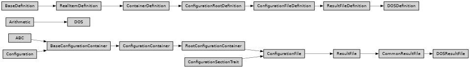

Contents
Links
Class documentation
Full name: ase2sprkkr.result_files.definitions.dos
Module class hierarchy

Description
Functions
create_definition()
create_definition
Classes
DOS(energy, dos[, type, id, spin, l])
DOS
DOSDefinition(name[, members, written_name, ...])
DOSDefinition
DOSResultFile(definition[, container, potential])
DOSResultFile